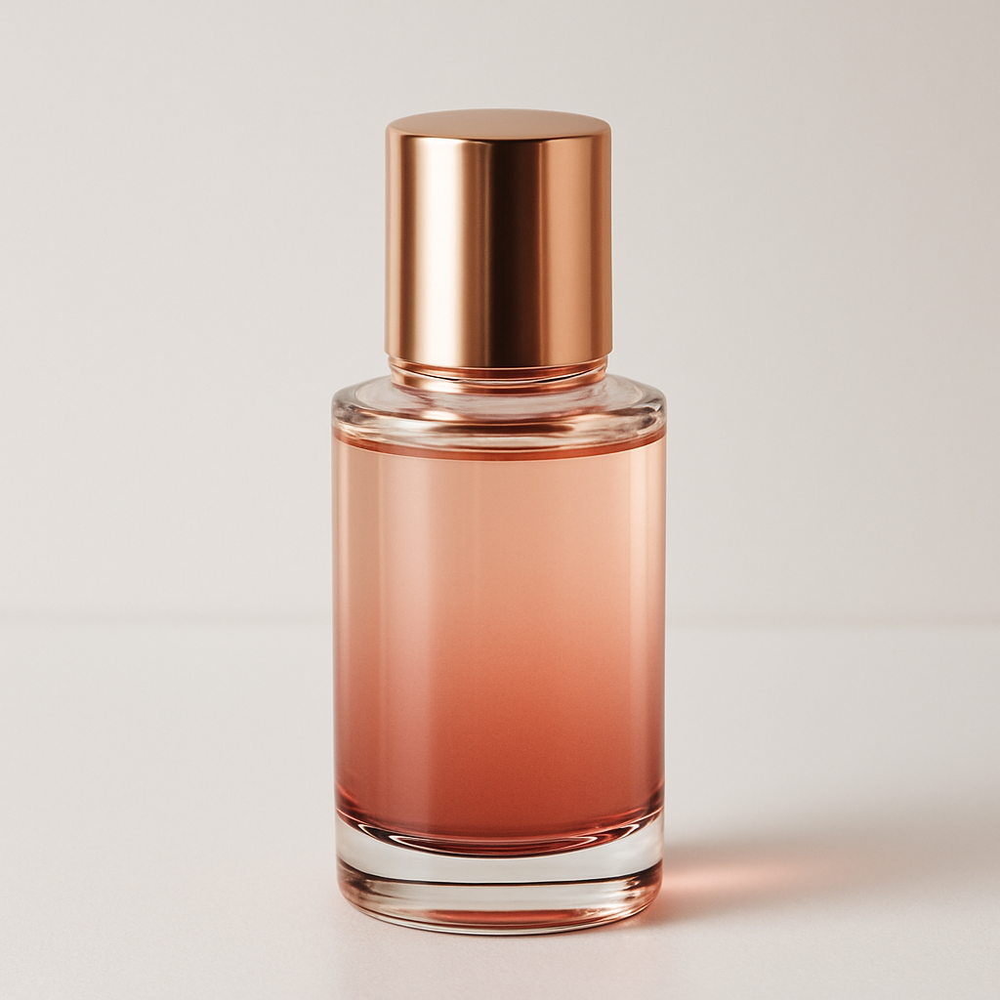
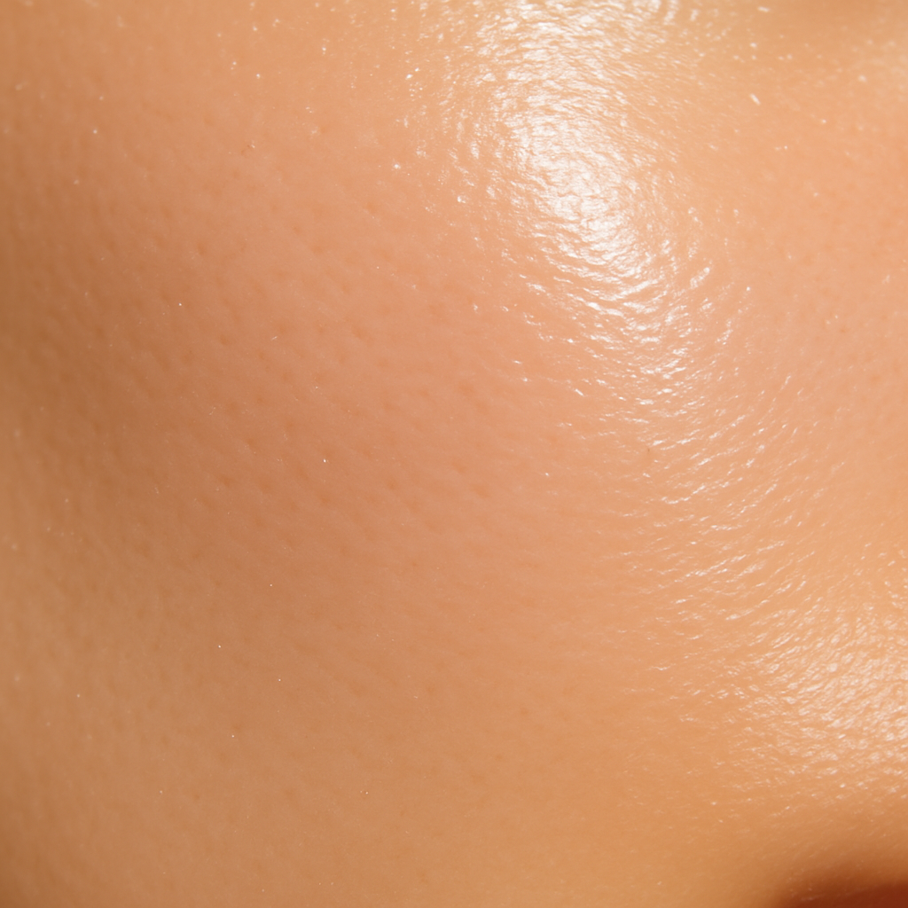

濃密なうるおい
角層までうるおいを届け、乾燥によるくすみを防ぎます。
AMBER × BEAUTY SCIENCE
年齢を重ねた肌に、うるおいと澄んだ印象を。
毎日のケアを、心ほどける上質な時間へ。

A moment of radiance,
made for you.
SCROLL
THE STORY
乾燥やハリ不足など、年齢とともに変化する肌。AMBER VEILは、肌をいたわりながらうるおいを届ける美容液です。
とろみのあるテクスチャーがやさしく広がり、べたつきを残さず、なめらかな肌へ整えます。
※本デモの表現・成分は仮置きです。ご支給資料に合わせて正確に設計します。
角層までうるおいを届け、乾燥によるくすみを防ぎます。
キメを整え、光をやわらかく反射するような印象へ。
朝晩使いやすい、なめらかで軽やかなテクスチャー。

DAILY RITUAL
洗顔後、化粧水で肌を整えます。
適量を手に取り、顔全体へやさしくなじませます。
乾燥が気になる部分には、重ねづけを。
OUR QUALITY
ブランドの研究背景や独自素材を、図解を交えてわかりやすく紹介します。
製造・品質管理・試験情報を、ご支給資料に基づいて丁寧に掲載します。
使用方法、よくある質問、商品仕様まで迷わず読める導線に整えます。
DISCOVER YOUR RADIANCE
福利厚生サービスから初めて商品を知った方にも、
ブランドの信頼と商品の魅力が自然に伝わる設計へ。